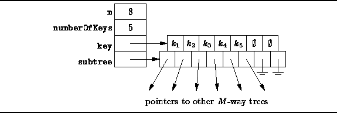

Data Structures and Algorithms
with Object-Oriented Design Patterns in C++
Data Structures and Algorithms
with Object-Oriented Design Patterns in C++
In order to illustrate the basic ideas,
this section describes an implementation
of M-way search trees in main memory.
According to Definition  ,
each internal node of an M-way search tree has n subtrees,
where n is at least two and at most M.
Furthermore, if a node has n subtrees,
it must contain n-1 keys.
,
each internal node of an M-way search tree has n subtrees,
where n is at least two and at most M.
Furthermore, if a node has n subtrees,
it must contain n-1 keys.
Figure shows how we can implement
a single node of an M-way search tree.
The idea is that we use two arrays in each node--the first holds the keys
and the second contains pointers to the subtrees.
Since there are at most M-1 keys and M subtrees,
the first array is one element shorter than the second array.

Figure: Representing a Node of an M-Way Search Tree
 Copyright © 1997 by Bruno R. Preiss, P.Eng. All rights reserved.
Copyright © 1997 by Bruno R. Preiss, P.Eng. All rights reserved.